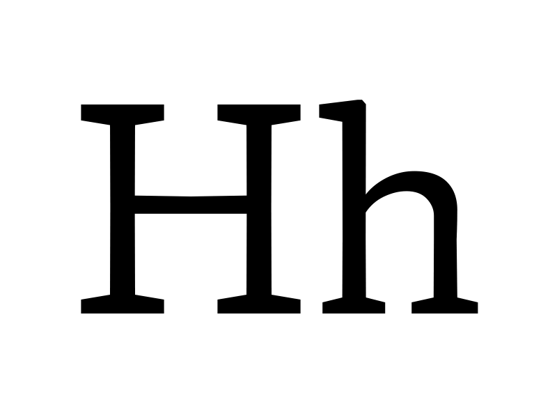
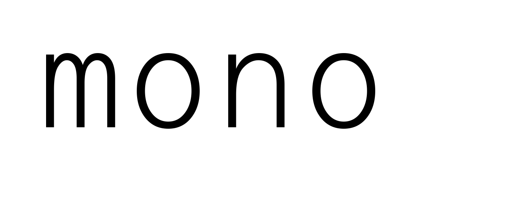
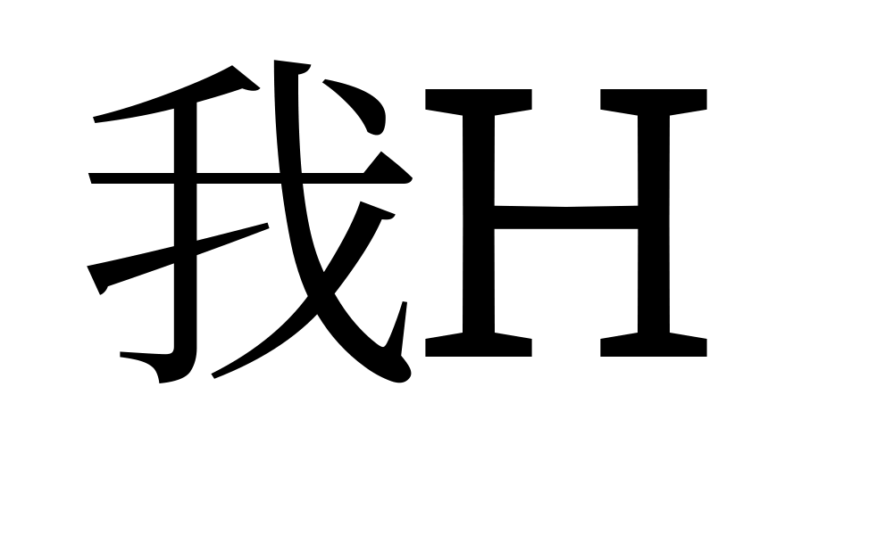
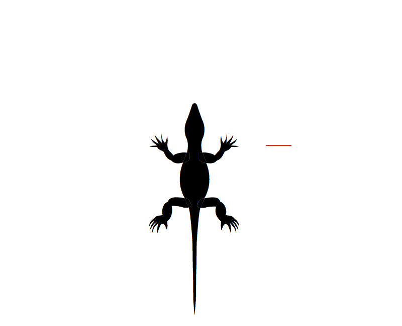
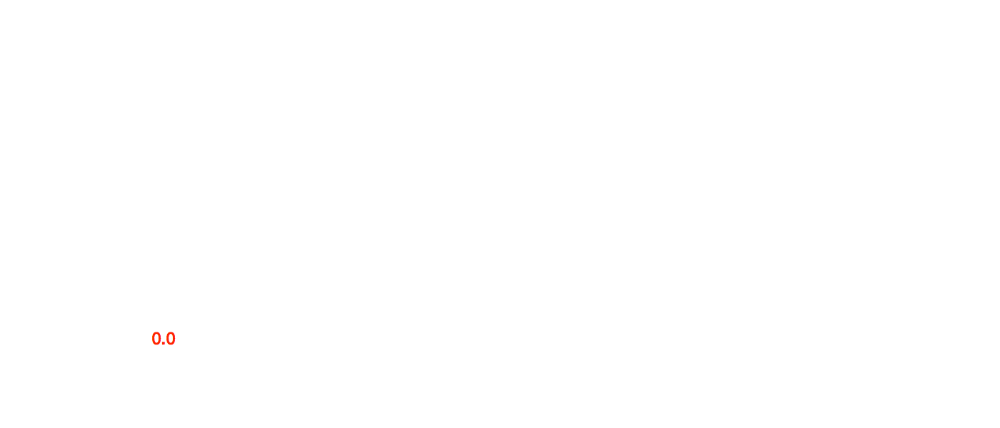

Font Bureau OpenType 1.8 Variations Axes Proposals
Our goal is to reveal how our useful variations fonts are built from axes that enable optical sizes, variation through time and motion, and multi-script integration (Latin/CJK/Arabic/Hebrew.)
This guide will be presented to the OpenType Variations working group and publicly during Summer 2017.
1. Latin Axes (8)
Typographers are familiar with many attributes of typefaces that express the Latin writing system. It is useful for them be available as variation axes so that typographers can control them precisely.
Some attributes are already recorded in fonts conforming to the OpenType v1.0 specification, as values in the OS/2 table (e.g. uppercase cap-height, lowercase x-height, or ascender/descender values.) This group proposes new axes for these values.
It also includes axes for other aspects that are inherent to all writing systems and specific to Latin: Controlling opaque or transparent areas in the X or Y dimensions.
The OpenType v1.8.0 specification already offers registered (interoperable) axes for weight, width, and optical size. These axes can be created by composing the axes proposed in this section. This technique of constructing those 'higher level' axes by blending together 'lower level' axes means that typographers can control them with high precision.
This set of axes form an inter-related and gestalt system. While it is useful for each of attribute to be available as variation axis, there is even greater value in having them form a cohesive system. As a set, a network effect is at play. The functionality for typographers increases exponentially as each attribute can be combined with the others, creating myriad possibilities. Registration in the OpenType specification will mean that this system becomes interoperable.
1.1 Presentation Axes (7)
Typographers apply decoration effects to type to create different forms of (highly stylized) emphasis. In the early days of digital type, many families did not have 'true' italics or bold weights, and application developers wrote auto-bold and auto-slant features, along with drop shadows, underlines, and so on. Since the introduction of TrueType, it has become much more common for type to be distributed in families with 'real' Bold, Italic, and Bold Italic styles.
The use of the auto features for bold and italic is now disdained by typographers. The use of a standard underline effect was famously rejected by Medium, and became a global phenomenon that even the New York Times has adopted. Variation axes can provide decoration effects that refine decoration effects for typographers and give them more precise control that is fine tuned within ranges provided by typeface designers specific to each face, and also simplify the problem for application developers.
2. Non-Latin Axes (7)
This group is similar to the first group, and extends the gestalt system with additional axes for typographers to better work with multilingual texts. The ability to adjust different fonts made for different writing systems to be used together in harmony is very useful for typographers. Often typographers must compromise in their use of one font to accommodate the requirements of another font, depending on which script is most important to them.
In practice, often the values of these axes will be the same or related to the equivalent Latin axis. There are no existing values in the OpenType v1.7 specification for these aspects.
Each script has unique alignment zones in the Y dimension. These axes allow precise control because their values are related to the em square.
3. Motion Axes (4)
In 1992, Font Bureau developed Zycon demo to demonstrate how Variable Fonts can be used for motion typography. The essence of motion is a simple equation:
Distance = Rate × Time
These axes enable motion graphics designers to solve this equation without trial-and-error on each glyph.
While some may wonder if Variable Fonts "should" be used in this way. But the fact is that they already are used this way. The question is not about if this might fly, since they are flying already, but if they will fly in a way that is interoperable.
With registration, reliable UIs can be made for motion graphics applications.
4. Don't Repeat Yourself (2)
These axes are not inter-related as groups 1 and 2 are, but have something in common: The idea that good engineering means seeking simplicity and elegance by reducing duplication.
Many Unicode characters can be expressed by a single glyph with variation along some axis. Therefore it would be good to be able to ask for a given Unicode character and get a position within a glyph's variation space where that character can be found. Similarly, alternate glyphs accessed through OpenType features could also be returned as locations in a variation space instead of duplicate glyph data. And these could be nested, like TrueType components.
This would provide filesize reductions even within ASCII: A single glyph could express the lowercase o, uppercase O, zero and its OpenType figure feature alternates, and the zeros within the percentage sign.
1. xtra
Tag: xtra
Name: x transparent
Description: assigns a “white” per mille value to each instance of the design space
Valid numeric range: -1000 to 2000
Scale interpretation: Values can be interpreted as per-mille-of-em
Recommended ‘normal’ value: Sample value 400
Suggested programmatic interactions: Applications may choose to select a variant in connection to an input, or it might be programmatically used
Suggested user interactions: Users may choose to program a variant in connection to direct or conjunctive input for a page description language, or via a user interface
Related axis information: Users may choose to program a variant in connection to direct or conjunctive input for a page description language, or via a user interface
Demo

2. xopq
Tag: xopq
Name: x opaque
Description: assigns a “black” per mille value to each instance of the design space
Valid numeric range: -1000 to 2000
Scale interpretation: Values can be interpreted as per-mille-of-em
Recommended ‘normal’ value: Sample value 88
Suggested programmatic interactions: Applications may choose to select a variant in connection to an input or it might be programmatically used
Suggested user interactions: Users may choose to program a variant in connection to direct or conjunctive input for a page description language, or via a user interface
Related axis information: Users may choose to program a variant in connection to direct or conjunctive input for a page description language, or via a user interface
Demo

3. ytra
Tag: ytra
Name: y transparent
Description: assigns an overall “white” per mille value to each instance
Valid numeric range: 0 to 2000
Scale interpretation: Values can be interpreted as per-mille-of-em
Recommended ‘normal’ value: Sample value 884
Suggested programmatic interactions: Applications may choose to select a variant in connection to an inpu, or it might be programmatically used
Suggested user interactions: Users may choose to program a variant in connection to direct or conjunctive input for a page description language, or via a user interface
Related axis information: Users may choose to program a variant in connection to direct or conjunctive input for a page description language, or via a user interface
Demo

4. yopq
Tag: yopq
Name: y opaque
Description: assigns a “black” per mille value to each instance of the design space
Valid numeric range: -1000 to 2000
Scale interpretation: Values can be interpreted as per-mille-of-em
Recommended ‘normal’ value: Sample value 116
Suggested programmatic interactions: Applications may choose to select a variant in connection to an input or it may be programmatically used.
Suggested user interactions: Users may choose to program a variant in connection to direct or conjunctive input for a page description language, or via a user interface
Related axis information: Users may choose to program a variant in connection to direct or conjunctive input for a page description language, or via a user interface
Demo

5. ytlc
Tag: ytlc
Name: y transparent lowercase
Description: assigns a “white” per mille value to each instance of the design space
Valid numeric range: 0 to 1000
Scale interpretation: Values can be interpreted as per-mille-of-em
Recommended ‘normal’ value: Sample value, 500
Suggested programmatic interactions: Applications may choose to select a variant in connection to an input, or it might be programmatically used.
Suggested user interactions: Users may choose to program a variant in connection to direct or conjunctive input for a page description language, or via a user interface
Related axis information: Users may choose to program a variant in connection to direct or conjunctive input for a page description language, or via a user interface
Demo

6. ytuc
Tag: ytuc
Name: y transparent uppercase
Description: a “white” per mille value for each Uppercase Height in the design space
Valid numeric range: -1000 to 1000
Scale interpretation: Values can be interpreted as per-mille-of-em
Recommended ‘normal’ value: Sample value 725
Suggested programmatic interactions: Applications may choose to select a variant in connection to an input or it might be programmatically used.
Suggested user interactions: Users may choose to program a variant in connection to direct or conjunctive input for a page description language, or via a user interface
Related axis information: Users may choose to program a variant in connection to direct or conjunctive input for a page description language, or via a user interface
Demo
7. ytde
Tag: ytde
Name: y transparent descender
Description: assigns a “white” per mille value to each instance of the design space
Valid numeric range: -1000 to 0
Scale interpretation: Values can be interpreted as per-mille-of-em
Recommended ‘normal’ value: Sample value -250
Suggested programmatic interactions: Applications may choose to select a variant in connection to input, or i the axis be programmatically used with input like line-spacing
Suggested user interactions: Users may choose to program a variant in connection to direct or conjunctive input for a page description language, or via a user interface
Related axis information: Users may choose to program a variant in connection to direct or conjunctive input for a page description language, or via a user interface
Demo

8. ytas
Tag: ytas
Name: y transparent ascender
Description: assigns a “white” per mille value to each instance of the design space
Valid numeric range: 0 to 1000
Scale interpretation: Values can be interpreted as per-mille-of-em
Recommended ‘normal’ value: Sample value 750
Suggested programmatic interactions: Applications may choose to select a variant in connection to an input, or it might be programmatically used
Suggested user interactions: Users may choose to program a variant in connection to direct or conjunctive input for a page description language, or via a user interface
Related axis information: Users may choose to program a variant in connection to direct or conjunctive input for a page description language, or via a user interface
Demo

9. xtab
Tag: xtab
Name: tabular width
Description: Axis contains a per mille value to each monospace or tabular instance
Valid numeric range: 1 to 4,000
Scale interpretation: Values can be interpreted as per-mille-of-em changes, between any instances in the design space
Recommended ‘normal’ value: Sample value 500
Suggested programmatic interactions: Applications except monospace setting, and such a width can vary along axis.
Suggested user interactions: Users may choose to program a variant in connection to direct or conjunctive input for a page description language, or via a user interface.
Related axis information: Users may choose to program a variant in connection to direct or conjunctive input for a page description language, or via a user interface.
Demo
10. udln
Tag: udln
Name: Underline
Description: values for weight of an underline
Valid numeric range: 1 to 1000
Scale interpretation: Values can be interpreted as per-mille-of-em
Recommended ‘normal’ value: Sample value for a Sans regular Latin would be 120
Suggested programmatic interactions: Applications may use the underline axis, or it may inform instance-making software of underline value and location.
Suggested user interactions: Users may choose to program a variant in connection to direct or conjunctive input for a page description language, or via a user interface.
Related axis information: Users may choose to program a variant in connection to direct or conjunctive input for a page description language, or via a user interface.
Demo

11. shdw
Tag: shdw
Name: Shadow depth
Description: values for the depth of a shadow
Valid numeric range: 1 to 1000
Scale interpretation: Values can be interpreted as per-mille-of-em
Recommended ‘normal’ value: Sample value for Sans 60 point shadow would be 30
Suggested programmatic interactions: Applications allow the user to select the drop shadow treatment for text, raising need for a value for every instance in a design space that affects a shadow
Suggested user interactions: Users may choose to program a variant in connection to direct or conjunctive input for a page description language, or via a user interface
Related axis information: Users may choose to program a variant in connection to direct or conjunctive input for a page description language, or via a user interface
Demo

12. refl
Tag: refl
Name: Reflect
Description: value for a y reflection
Valid numeric range: -1 to -1000
Scale interpretation: Values can be interpreted as per-mille-of-em
Recommended ‘normal’ value: sample value for a reflection would be -350
Suggested programmatic interactions: Applications may allow the user to select the reflection of text.
Suggested user interactions: Users may choose to program a variant in connection to direct or conjunctive input for a page description language, or via a user interface
Related axis information: Users may choose to program a variant in connection to direct or conjunctive input for a page description language, or via a user interface
Demo

13. otln
Tag: otln
Name: Outline value
Description: values for the weight of an outlined font
Valid numeric range: 1 to 1000
Scale interpretation: Values can be interpreted as per-mille-of-em
Recommended ‘normal’ value: default is 0
Suggested programmatic interactions: Applications may allow the user to select the embossing of text and a depth if the axis exists.
Suggested user interactions: Users may choose to program a variant in connection to direct or conjunctive input for a page description language, or via a user interface
Related axis information: Users may choose to program a variant in connection to direct or conjunctive input for a page description language, or via a user interface
Demo

14. engr
Tag: engr
Name: Engraving value
Description: values for the width of the engrave
Valid numeric range: 1 to 1000
Scale interpretation: Values can be interpreted as per-mille-of-em
Recommended ‘normal’ value: Sample value for a Sans regular Latin engraving would be 33
Suggested programmatic interactions: Applications may allow the user to select the embossing of text, and a depth if the axis exists
Suggested user interactions: Users may choose to program a variant in connection to direct or conjunctive input for a page description language, or be given the option via a user interface
Related axis information: Users may choose to program a variant in connection to direct or conjunctive input for a page description language, or be given the option via a user interface
Demo

15. embo
Tag: embo
Name: emboss depth
Description: values for embossment depth
Valid numeric range: 1 to 1000
Scale interpretation: Values can be interpreted as per-mille-of-em
Recommended ‘normal’ value: Sample value for Sans 60 point emboss would be 24
Suggested programmatic interactions: Applications may allow the user to select the embossing of text, and a depth if the axis exists.
Suggested user interactions: Users may choose to program a variant in connection to direct or conjunctive input for a page description language, or be given the option via a user interface
Related axis information: Users may choose to program a variant in connection to direct or conjunctive input for a page description language, or be given the option via a user interface
Demo

16. ytch
Tag: ytch
Name: y transparent Chinese
Description: values represent the height of Chinese glyphs
Valid numeric range: 1 to 2400
Scale interpretation: Values can be interpreted as per-mille-of-em changes, between any instances in the axis
Recommended ‘normal’ value: Sample value 950
Suggested programmatic interactions: Applications may choose to select a variant in connection to an input for more or less ytch, or it might be programmatically used
Suggested user interactions: User may chose a variant to modify the width of the type
Related axis information: User may chose a variant to modify the width of the type
Demo
17. xtch
Tag: xtch
Name: x transparent Chinese
Description: values represent the width of Chinese glyphs
Valid numeric range: 1 to 8000
Scale interpretation: Values can be interpreted as per-mille-of-em changes, between any instances in the axis
Recommended ‘normal’ value: Sample value 950
Suggested programmatic interactions: Applications may choose to select a variant in connection to an input for more or less xtch, or it might be programmatically used
Suggested user interactions: User may chose a variant to modify the height of the type
Related axis information: User may chose a variant to modify the height of the type
Demo

18. rxad
Tag: rxad
Name: relative x advance
Description: assigns a distance value per mille to the motion of a glyph
Valid numeric range: -1000 to 1000
Scale interpretation: Values can be interpreted as per-mille-of-em
Recommended ‘normal’ value: none
Suggested programmatic interactions: Applications may enable plotting the number of loops of an animation required for the time and distance defined by the user.
Suggested user interactions: Users may choose different speeds and distances traveled by an animation
Related axis information: Users may choose different speeds and distances traveled by an animation
Demo

19. ryad
Tag: ryad
Name: relative y advance
Description: assigns a distance value per mille to the motion of a glyph
Valid numeric range: -1000 to 1000
Scale interpretation: Values can be interpreted as per-mille-of-em
Recommended ‘normal’ value: none
Suggested programmatic interactions: Applications may enable plotting the number of loops of an animation required for the time and distance defined by the user
Suggested user interactions: Users may choose different speeds and distances traveled by an animation
Related axis information: Users may choose different speeds and distances traveled by an animation
Demo
20. rsec
Tag: rsec
Name: relative second
Description: axis contains a relative second value for one, or each glyph on that axis
Valid numeric range: 001- 60.00
Scale interpretation: Value can be interpreted as a recommendation for one second of animation time
Recommended ‘normal’ value: 1
Suggested programmatic interactions: Applications may plot the relative time of a glyph, or a glyph to other glyphs, and play them in relative or absolute time
Suggested user interactions: Users may choose realistic, or other speeds for an animation
Related axis information: Users may choose realistic, or other speeds for an animation
Demo
21. vrot
Tag: vrot
Name: glyph rotation axis
Description: assigns a value to each instance of the axis
Valid numeric range: -360.00 to 360.00
Scale interpretation: Values can be interpreted as degrees of rotation from the default, which is zero
Recommended ‘normal’ value: Default fonts should be set at 0 degrees
Suggested programmatic interactions: Applications may choose to select a variant in connection to an input for ccw or cw vrot, or it might be programmatically used.
Suggested user interactions: Users may choose to program a variant for direct input, or via a user interface connection.
Related axis information: Users may choose to program a variant for direct input, or via a user interface connection.
Demo

22. vuid
Tag: vuid
Name: Unicode variation axis
Description: instances represent changes to the glyph’s Unicode Id
Valid numeric range: Any Unicode value can be used
Scale interpretation: Values can be interpreted as glyph locations
Recommended ‘normal’ value: Any common Unicode value
Suggested programmatic interactions: Applications may choose to present a variation in connection to an input Unicode id
Suggested user interactions: Users may choose to input a character to a page description language, and the unicode presented is a variant in connection to other input
Related axis information: Users may choose to input a character to a page description language, and the unicode presented is a variant in connection to other input
Demo

23. votf
Tag: votf
Name: feature variation axis
Description: instances represent changes to a glyph’s feature
Valid numeric range: Any feature tag can be used.
Scale interpretation: Values can be interpreted as feature locations
Recommended ‘normal’ value: Any common feature
Suggested programmatic interactions: Applications may choose to select a variation in connection to an input feature tag id.
Suggested user interactions: Users may choose to program a feature in connection to input for a page description language.
Related axis information: Users may choose to program a feature in connection to input for a page description language.
Demo